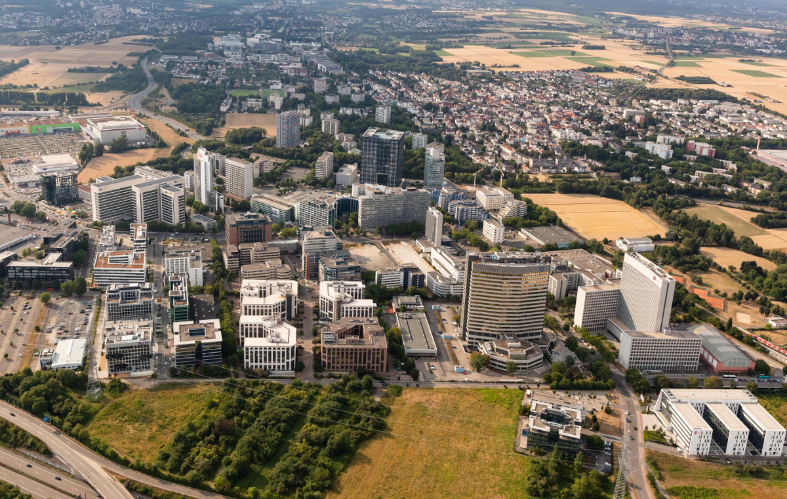

Leben
Gestaltungsmöglichkeiten des Lebens in Eschborn
Bildung
Eschborner Kinder können einer der insgesamt 3 Grundschulen besuchen: Hartmutschule Pestalozzistraße 7-1165760 EschbornTelefon: 06196/95 40 950 Westerbachschule Georg-Büchner-Straße 1865760
Eschborn Telefon: 06173/319610 Süd-West Schule Berliner Straße 27-29 65760 Eschborn Telefon: 06196-92/75 78 60. Im weiterführenden Bereich gibt es mit der Heinrich-von-Kleist-Schule eine kooperative
Gesamtschule mit gymnasialer Oberstufe. Heinrich-von-Kleist-Schule Dörnweg 53 65760 Eschborn elefon: 06196/95700. Weiterbildung Die Musikschule Taunus bietet jungen Menschen sowie Erwachsenen eine große Auswahl
sich musiklanish weiterzubilden Weitere Informationen und das Kursangebot gibt es unter https://www.musikschule-taunus.de . Stadtbibliothek: Eschborn verfügt
über insgesamt 2 Stadbüchereien, eine in Eschborn und eine in Niderhöchstadt. In beiden Büchereien können diverse Medien kostenlos ausgeliehen werden. Das kann man zu folgenden Öffnungszeiten tun: Stadtbücherei
Eschborn Rathausplatz 36 65760 Eschborn Tel.: 06196 - 490 256 stadtbuecherei@eschborn.de Öffnungszeiten: Dienstag 15-19 Uhr, Mittwoch 10-14 Uhr, Donnerstag 15-19 Uhr, Samstag 10-13 Uhr Stadtbücherei
Niederhöchstadt Steinbacher Straße 23 65760 Eschborn Telefon: 06196/490-240 stadtbuecherei-ndh@eschborn.de Öffnungszeiten: Dienstag 11-13 Uhr, Mittwoch 16-19
Uhr, Freitag 16-18 Uhr, Samstag 10-13 Uhr.
Soziales & Gesellschaft
Kinder, Jugend & Familie Eschborn er Kinder genießen vielfältige Möglichkeiten der Kinderbetreuung. Kinderbetreuung unter 3 JahrenBitte hier klicken um bei sich den jeweiligen Anbietern
anzumelden : (3-6 Jahren) EschbornSchulbezirk Grundschule Süd-West: Hort Berliner Straße
Bismarckstraße (Kita)Bremer Straße (Kita) Süd-West (Kita) Schulbezirk Hartmutschule: Dörnweg (Altersmischung) Odenwaldstraße (Altersmischung) Ritterhof (Kita) Schulkinderhaus Hartmutschule Niederhöchstadt
SchulbezirkWesterbach-Schule: Rosenweg
(Altersmischung) Schillerstraße (Altersmischung) Schulkinderhaus Schillerstraße Weingärten (Kita) Schulkinderhaus Westerbach Keine Schulbezirksbindung: Kindertagesstätte
Naturgruppe
im Arboretum. Frauen & LGBTQ das Gleichstellungsthema ist uns in Eschborn sehr wichtig, denn wir wollen dass die Gleichberechtigung von Frauen und Männern nicht nur in der Ver-
fassung steht,
sondern auch gelebt wird. Wenn Frauen in Eschborn über ihr Lebens- und ihre Arbeits sprechen wollen und Hilfe benötigen, ist die Gleichstellungsbeauftragte das richtige Ziel.
BItte Frau B: Bellchambers
ansprechen Telefonnummer 06196/490-189 oder gleichstellung@eschborn.de Senioren Aufgrund der demographischen Entwicklung in deutschland gibt es immer
mehr
ältere Menschen. Das Leben dieser menschen zu gestalten ist uns als Stadt sehr wichtig und daher bieten wir enstprechende Angebote an.
Kulturelle Veranstaltungen für Senioren
Altenhilfekoordination und Altenplanung
Menschen mit Behinderung
Eschborn möchte ein inklusives Leben ermöglichen. Unsere Ansprechpartner helfen mit Beratung und weiterführenden Hiweisen: Telefon: 06196/490-000 Email:
senioren@eschborn.de
Migration & Integration Integration wird als ein gesamtgesellschaftlicher Prozess verstanden, der das Zusammenleben aller Bürger in Eschborn in gegenseitigem Respekt und Wertschätzung
ermöglicht. Menschen,
die aus dem In- und Ausland nach Eschbron kommen, sollen die Möglichkeit bekommen, am Stadtleben teilzuhaben. Wir bieten daher Informationen und Dienste zu
folgenden Themen an Ukraine-Hilfe,
Flüchtiligsarbeitskreis, Ausländerbeirat, Spreachangebote und viles mehr. Für weitere Informationen klickt bitte
hier
Wohnen, Planen & Bauen
